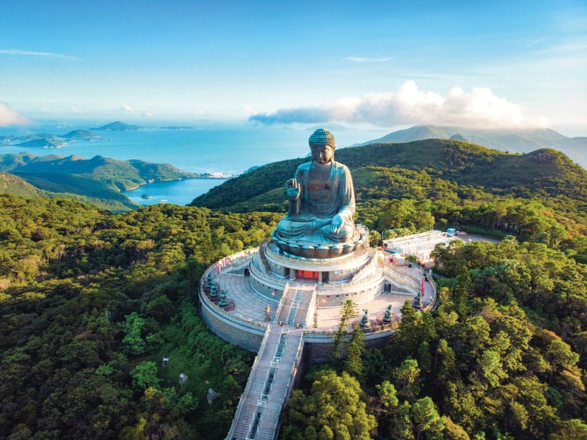
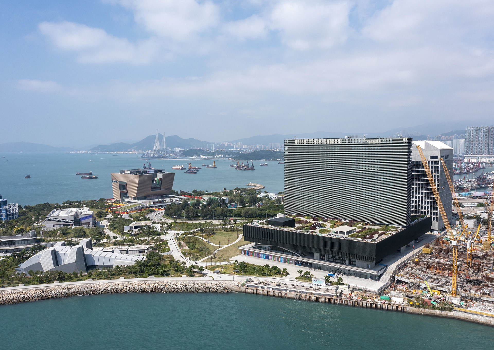

Hong Kong x India
06 · Culture + Calm
Beyond the skyline
Add a quieter Hong Kong to balance the trip.
The cultural route gives multi-generation groups a slower rhythm: temples, cable-car landscapes, arts districts and open harbour walks.
Verified HKTB fact: the Big Buddha is 34 metres including its base, reached by 268 steps, and completed in 1993.


